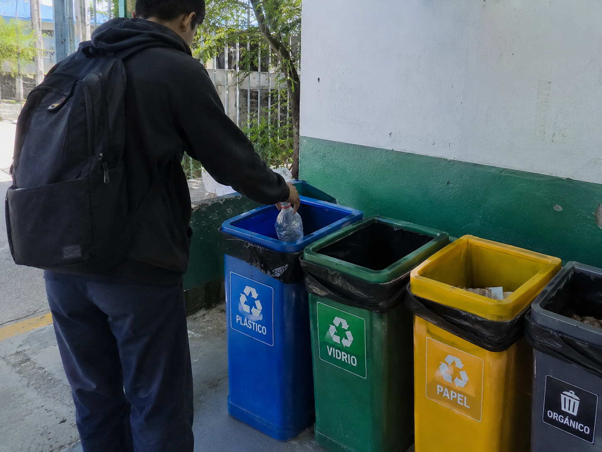
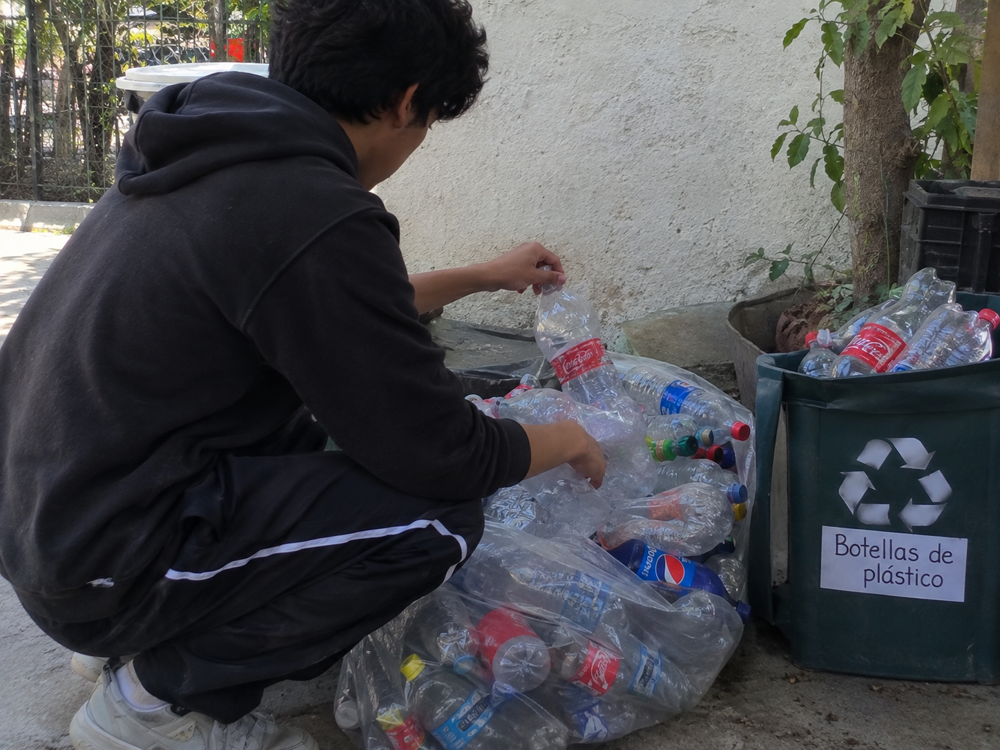

¿Sabías qué?
Una botella de plástico tarda más de 400 años en desaparecer si la tiramos a la naturaleza. ¡Por eso es tan importante reciclarla!
Aprende a separar, reducir y reciclar la basura en tu escuela
Hola amiguitos. Todos los días en el recreo y en los salones generamos basura como envolturas, botellas de plástico, cáscaras de fruta y hojas de papel. Si tiramos todo junto en el mismo bote, la basura se ensucia y no se puede reciclar.

Con el Naturaleza Digital aprendemos a separar nuestros residuos en botes de colores para mantener la escuela limpia y cuidar a los animales y plantas del planeta.

Una botella de plástico tarda más de 400 años en desaparecer si la tiramos a la naturaleza. ¡Por eso es tan importante reciclarla!